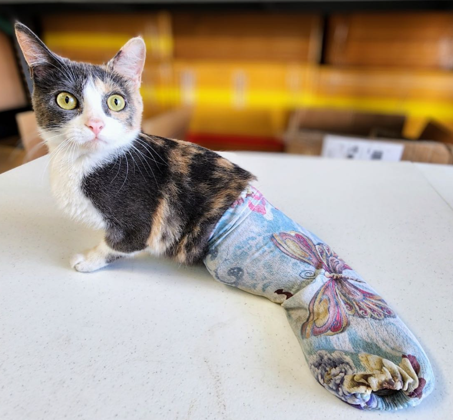
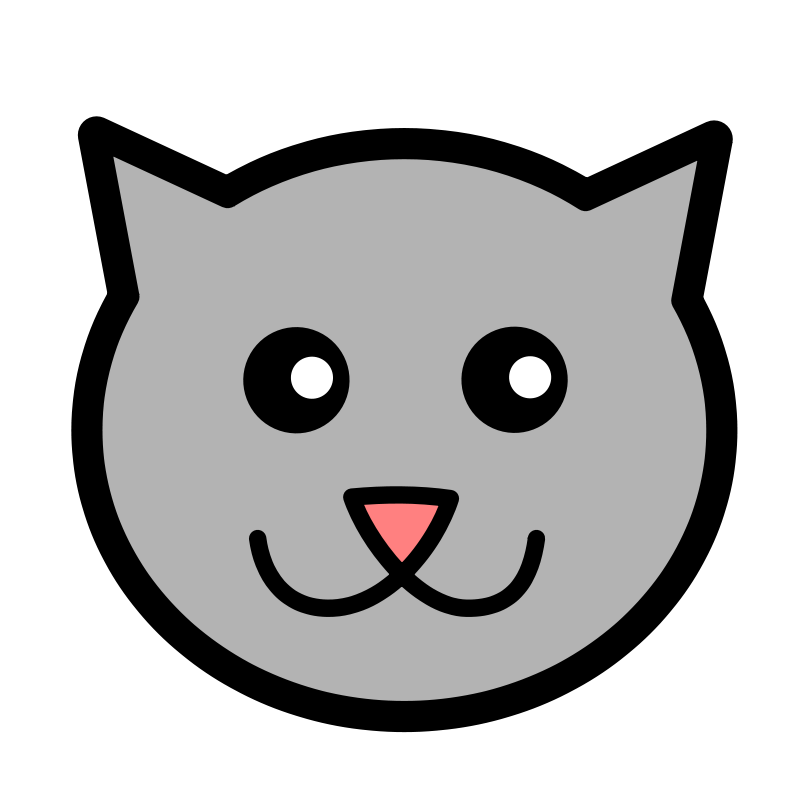

About Us
Del Gato is a donation-based, foster-based cat rescue that emerged in early 2020 in response to the homeless cat crisis of Southern California. Del Gato works around the clock to provide a safe landing, veterinary care, and long-term plan for some of the 5 million homeless, feral, abandoned, sick, and injured community cats living on the streets of LA and Orange Counties.
Your decision to adopt a cat from Del Gato allows more space for another cat in need to be brought inside and given the care that it deserves and the opportunity for a better life. We believe in TNR as the only solution to the ongoing prevention of cats suffering on the streets and more kittens being born outside into a life of tragedy.
Thank you for your support!
Our Work

Click to learn more
We strongly believe that no friendly cat should be returned to the streets; therefore we will work
diligently to find them a suitable home where they can live out the rest of their lives in comfort and happiness.
Our rescued cats undergo a thorough vetting process that includes vaccinations, spaying or neutering, and necessary
medical treatments to ensure their health and readiness for adoption.
Our adoption process prioritizes the welfare
of both the cat and the potential adopter. We understand the importance of finding a forever home where both the cat
and the owner will be happy and comfortable. Thus, we take the screening process very seriously and evaluate not
only the environment but also the connection between the cat and the potential adopter. Our goal is to find a
perfect match where the cat will be safe, healthy, and loved, and the owner will provide a nurturing and loving
home.
If you're interested in adopting a rescued cat, we invite you to contact us and learn more about our adoption
process.
At Del Gato Rescue, we are proud to have a team of experienced and trained volunteers who are equipped to handle a variety of emergency situations that feral cats may face, including injuries, danger, natural disasters, abandonment, and abuse.
We collaborate closely with local veterinarians and animal hospitals to ensure that cats in emergency situations receive the best possible care.
Moreover, we are dedicated to rescuing cats from shelters to prevent economic euthanasia. We recognize that overcrowding in shelters can lead to difficult decisions regarding which animals to euthanize, and we believe that every animal deserves a chance at a happy and healthy life. Therefore, we work tirelessly to find homes for cats in need and to provide them with the care and support they need to thrive.
If you are aware of a feral cat in an emergency situation, please do not hesitate to contact us for assistance. We are always ready to provide help and support to feral cats in need.
TNR (Trap-Neuter-Return) is a humane and effective approach to managing feral cat
populations. It involves trapping the cats, spaying or neutering them, vaccinating them, treating them for fleas,
and then returning them to their original habitat. This method not only prevents the cats from breeding and
producing more litters but also reduces their territorial behavior and minimizes their impact on the environment.
At
Del Gato Rescue, we work closely with community members to educate them on the benefits of TNR and to provide them
with the necessary resources and support to implement TNR programs in their neighborhoods.
If you are interested in
requesting TNR services for a feral cat colony in your community, please fill out our request form. Our team at Del
Gato Rescue will get in touch with you as soon as possible to provide you with more information on how we can work
together to improve the lives of feral cats in your area.
Adopt & Foster
Prepare yourself for a delightful adventure!
Click on the magical link above to unveil the
purr-fect feline companion that awaits you.
Get ready to meet your future furry friend and embark on a journey filled with love, joy, and endless
cuddles!
Let the enchantment begin with just a click away!
By opting to foster a cat through our program, you not only offer a nurturing home to a feline companion, but also play a crucial role in saving two lives simultaneously. Your act of kindness provide a safe haven for the fostered cat, plus creates the space necessary for us to rescue another cat, thus doubling the impact.
Donate
As a 501c3 non profit organization, we rely solely on donations from kind-hearted people like you to continue our
life-saving work. Your donation, no matter how small, can make a significant difference in the lives of cats in
need, and the best part is, your contribution is 100% tax-deductible. If you need a tax receipt for your
donation, please don't hesitate to contact us.
Your support will help us provide a safe and loving environment for cats in need, promote responsible pet
ownership through education and community outreach, and implement TNR programs to address the root cause of cat
overpopulation in Southern California. We are deeply grateful for your generosity and for joining us in our
mission to make a difference in the lives of cats and their communities.
Testimonials
Jennifer Bendik

"We have been feeding and wanting to TNR a mama cat and her baby as soon as the baby was old enough and we are SO thankful to have found Jen and Del Gato Rescue! It took 2 tries to trap the baby and we are going for a third try on the mama next week. If you have any experience with feral cats, you know how hard it can be to trap them, not to mention all of the supplies required. Jen has a lot of patience and is smart and calm and kind and so very helpful and doing it all for the love of these animals. Del Gato Rescue helps our outdoor cat communities thrive instead of overpopulate or end up euthanized. If you have a feral cat community in L.A. I urge you to reach out to them and get your outdoor kitties trapped, fixed, vaccinated, recovered and then released back to where they were found so they can be happy and healthy in their outdoor environment."
Emily Ackerman
"Jen is the best in the cat rescue game. She is kind, loyal, and loves every cat that comes through her door so much. I adopted two cats from Del Gato. First was Thea- she came from a hoarding situation. Before I adopted her she was spayed, vaccinated, and vetted to be sure she was healthy. Then a few months I fostered Euclid. I wasn’t sure who I felt about two cats but Euclid won my heart. He was also neutered, vaccinated and vetted before he came into my care. Jen is there for me along the way too. She’s great about answering my questions and she even took me to Petco when I adopted Thea so I knew exactly what to buy. If you are looking to foster or adopt a cat or kitten look no further. You will fall in love with any of the cats Del Gato rescues!!"
Danny Nguyen
"Jen and Donald are amazing. They truly care so much about these cats and would give everything they have for them. All we can do is try to help their mission by fostering, adopting, or donating to their cause. They work full time jobs and still dedicate the remaining energy they have into saving these babies. Your trust, donations, and referrals will not go to waste, please consider helping them in any way you can!"
Contact Us
(323) 206-6185
delgatorescue@gmail.com